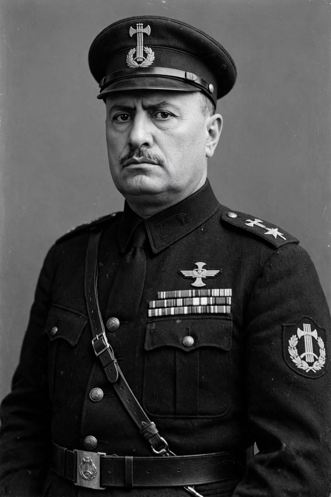

Benito Mussolini
From Wikipedia, the free encyclopedia
Benito Amilcare Andrea Mussolini (29 July 1883 – 28 April 1945) was an Italian dictator and journalist who founded and led the National Fascist Party. He became Prime Minister of Italy in 1922 after the March on Rome, progressively dismantled democratic institutions, and ruled as Il Duce until his overthrow in 1943.

Mussolini in 1937, during his rule as head of the Italian government.
Originally a socialist journalist and editor of Avanti!, Mussolini broke with the Italian Socialist Party over his support for intervention in the First World War, founded the Fasci movement in 1919, and channelled post-war disorder, nationalist resentment and fear of communism into a paramilitary movement. In power he built a one-party state organised around the corporatist system, the cult of the Duce and the promise of a new Roman Empire; his regime enacted the Lateran Treaty with the Vatican (1929), invaded Ethiopia (1935–36), intervened in the Spanish Civil War, and allied Italy with Nazi Germany in the Pact of Steel.
Downfall and death
Italy entered the Second World War in June 1940; military failures in Greece, North Africa and Sicily destroyed the regime's support. On 25 July 1943 the Fascist Grand Council voted against him and King Victor Emmanuel III had him dismissed and arrested. Rescued by German commandos, he headed the puppet Italian Social Republic in the north while civil war raged. Captured by partisans while fleeing in April 1945, he was shot on 28 April and his body was displayed in Milan's Piazzale Loreto.
Legacy
Mussolini created the first fascist regime and supplied a model — the leader cult, the single party, the corporate state, mass spectacle — that influenced authoritarian movements across Europe, including Hitler's. Historians debate the depth of popular consent, the regime's modernising claims, and the extent of its crimes, including chemical warfare in Ethiopia and racial laws against Jews enacted in 1938.